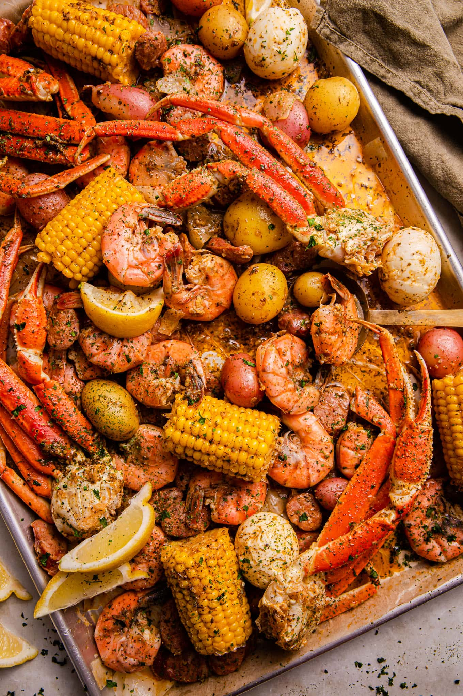

Seafood Boil

Description
Ingredients
- 1 pound small new potatoes, cut into quarters
- 2 pounds uncooked shrimp, peeled and deveined
- 2 teaspoons vanilla extract
- 1 pound kielbasa sausage, sliced
- 2 ears corn, cut in half
- 4 tablespoons unsalted butter
- 4 tablespoons olive oil
- 2 tablespoons Worcestershire sauce
- 2 tablespoons Creole seasoning
- 1 teaspoon fresh cracked black pepper
- 1 medium lemon, cut into 4 wedges
- Reynolds Wrap® Heavy Duty Aluminum Foil
Steps
- Preheat an outdoor grill to 375 degrees F (190 degrees C).
- Place potato quarters into a large pot of water and bring to a boil. Reduce the heat and simmer for 10 minutes to jump-start the cooking process. Drain.
- Arrange four 12x18-inch sheets of foil on a clean work surface.
- Pile equal amounts shrimp, potatoes, kielbasa, and corn into the center of each sheet. Add 1 tablespoon butter to each pile, then drizzle with 1 tablespoon oil and 1 1/2 teaspoons Worcestershire sauce. Sprinkle 1 1/2 teaspoons Creole seasoning and 1/4 teaspoon pepper over each pile. Squeeze a lemon wedge over each pile, then place the rind on top. Wrap each piece of foil into a tightly sealed packet.
- Place foil packets onto the preheated grill. Cover the grill; cook and steam until shrimp and potatoes are cooked through, 15 to 18 minutes.
- Remove from the grill and carefully unwrap foil to serve.